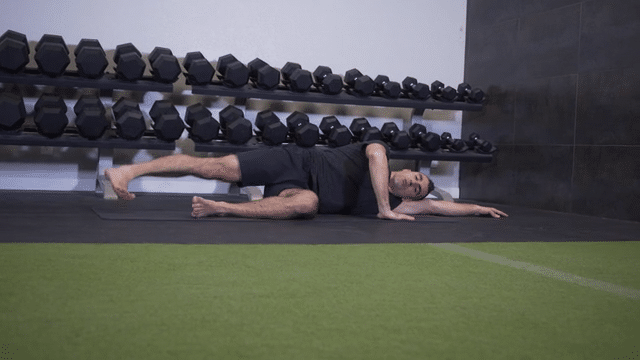

S21-E6 · The MOST Effective Fitness “SECRETS” are Surprisingly Obvious
Hello {first_name},
Watching gymnasts is amazing. They make everything look easy which is a paradox, because what they are doing is incredibly difficult.
For example, watching men on the rings hold an Iron Cross (a movement fairly common in the gymnastics world) - may have made many of us men feel like we can pull a move off like that…only to find out when we try at our local neighborhood park, how wildly difficult it is LOL.
No gymnastics coach ever told their athlete to go do an Iron Cross as a beginner. Instead, they worked on progressions sustained over time, to the point where holding an Iron Cross was possible.
Kettlebell Lifestyle follows the same essentail principle.
Lay the Foundation > Build > Perform > Sustain
Here’s an example straight from the course illustrating a basic progression (I will explain further as you read on):
LEVEL 1 (Beginner Track) Side of Hip Raises 
[Image unavailable: “Clean"] Alternating Halo Side Lunge Combo [Image unavailable: “Clean"]
Progression Explained: The glute medius is targeted in the Side of Hip Raises which is important to stabilize the hip in single leg and lateral movement. Essential for ANYTHING athletic. The Static Alternating Side Lunge moves from an isolated movement to an integrated movement. The Alternating Halo Side Lunge Combo adds weight, integrates the upper and lower body, becomes more dynamic, trains balance, coordination, timing, etc.
LEVEL 2 (Intermediate Track) Hand to Hand Swing [Image unavailable: “Clean"]
Single Arm Clean [Image unavailable: “Clean"]
RMT (Rotational Movement Training) Clean [Image unavailable: “Clean"] Progression Explained: The Swing itself is a ballistic hinge movement and is the basis of many advanced movements in Kettlebell lifting. Adding the Hand to Hand Swing is a ballistic hinge movement that works coordination, gets you comfortable with timing, and works single-arm training in preparation for the Clean. The Clean is a BIG step in integrating the upper and lower body and a chance to practice "hand insertion". The RMT (rotational movement) Clean takes each of these elements up a notch with more rotation, coordination, timing, and significantly more integration between the upper and lower body.
The Bottom Line
Progressions yield better results, period. Even if you are already strong and used to tough workouts, following a progression rather than just diving in the deep end works better in the long-run - trust me.
Combine intelligent recovery with progressions and you have…Kettlebell Lifestyle.
Try the free follow-along workout from KBL today (if you haven’t already) and see if KBL is a fit for you. If it is, click here and use the code KBRoadmap for $100 off.
Train Intentionally, Mike Salemi
In case you were curious... What Makes Kettlebell Lifestyle a Fantastic Program?
LIFETIME ACCESS to a 9 week, follow along video program. I spent months testing and tweaking these workouts and how you progress from one phase to the next. One time through is great, but repeating the program (and charting your continued progress) is even better. There are 9 weeks of training included for beginners, and 9 weeks for the intermediate level.
On Ramp Build your energy stores to set yourself up for progress while getting familiar with the platform.
Phase 1 Bring up weak points and create a strong foundation.
Phase 2 Layer in skill development with more dynamic movements to increase conditioning.
Phase 3 This phase is performance using more rotation with challenging workouts to emphasize strength, speed, mobility, coordination, strength endurance, power, and more. Get KBL Now Use code KBRoadmap for $100 off
How is KBL Different? *These “extra” things that support the program are what set KBL apart and make the price a steal.
Video Coaching of Everything
Daily Personalization The answers to the daily 5 question training readiness assessment customizes the reps and sets for that day’s workout. You’ll get regular practice at the vital skill of personalization until it becomes second nature.
Beginner and Intermediate Track Each workout has exercises chosen for 2 levels of fitness.
2 Ways to Navigate Immersion - going through the program as I wrote it OR self-guided - navigating how you want to.
Onboarding Questionnaire Take the guesswork out of knowing whether to follow the beginner or the intermediate track.
8 Bonus Videos With Experts Subject matter experts share their perspectives on topics that will support your ability to set and achieve your fitness goals: nutrition, working in, addressing hip and shoulder restrictions, and more.
Kettlebell Selector Tool Your answers to a few questions will narrow down the suggestions from 64 weights to the 3 best suited to your training experience. It’s best to have several weights, but you can go through the program with just one or two.
Personalized Stretch Test Focus your time stretching on exactly the places your body needs it. This test will guide you to your tight spots and suggest a stretching protocol for you to follow. These aren’t your middle school PE stretches.
Get KBL Now Use code KBRoadmap for $100 off
|